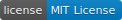

cr-patcher-csharp
| [](https://ci.appveyor.com/project/knightking100/cr-patcher-csharp) [](https://ci.appveyor.com/project/knightking100/cr-patcher-csharp/build/artifacts)  |
- cr-patcher-csharp is a tool written in C# by knightking10
- It is c# version of cr-patcher
- This build is beta and very buggy.
Features
- Patch Clash Royale apk and ipa to use in proxies and private servers (even more supercell games with another configs)
- After being patched, Clash Royale apk is signed and zipaligned with tools (there isn’t any ipa sign tool for windows but we will sign it when installing)
Installation
- Open and compile the project in Visual Studio 2017…
- …or get the latest build here
Issues
- Just contact me or create an issue here!
- My contacts:
- Skype: knight.king584
- Discord: knightking10#1694
Contribution
I would love to! Just don’t break the code!
Usage
- Copy the apk (or ipa) in the program directory
- Rename it to com.supercell.clashroyale-version.apk (or .ipa)
- Open the program and enter the name
- Wait till it complete. You will get an apk call …completed
IOS Intallation guide
- Good news: You can install the patched to non-jailbroken device.
- Requirements: Itunes installed and your IDevice is connected to your PC ### Steps
- Download Cydia Impactor
- Open it and then choose your device
- Drag the ipa to Cydia Impactor
- Enter your apple ID creditials (it won’t still it. It is only used to create a certificate)
- Wait till app appears on your screen
Reference
- cr-patcher
- coc-patcher